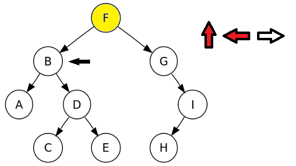
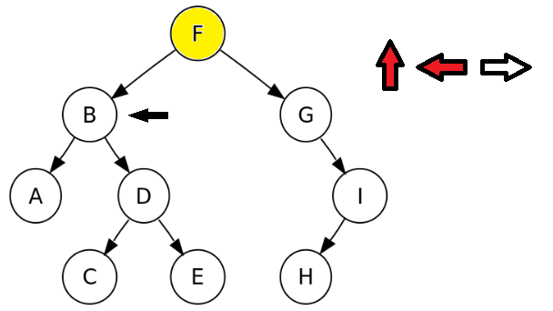
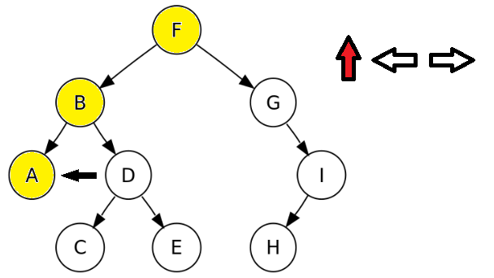
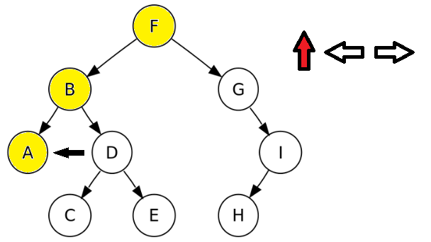
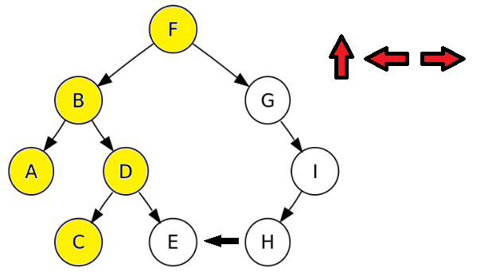
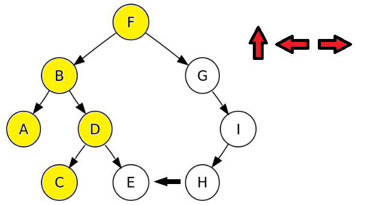
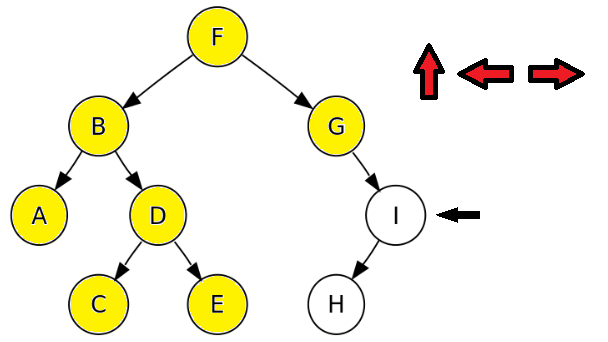
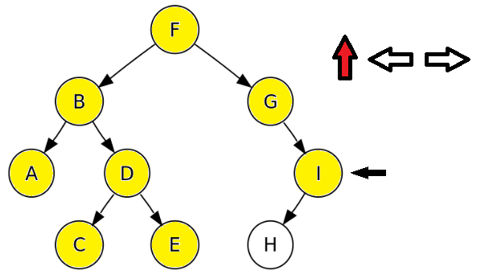
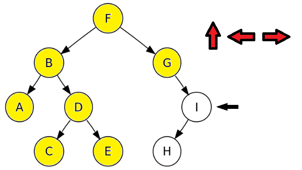
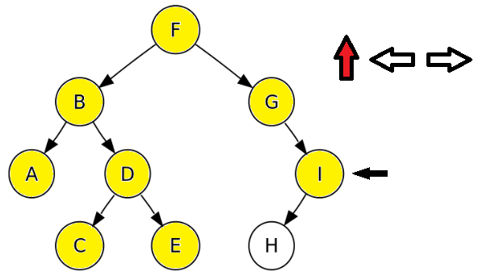

Push :añade un elementoen la cima de la pila.Pop :elimina un elementoen la cima de la pila.LIFO (Last In First Out).


En una lista


Podemos recorrer un árbol en
Para estudiar el recorrido de arboles analizaremos le siguiente árbol binario ordenado.
Recorrido en
 


 



 

 


